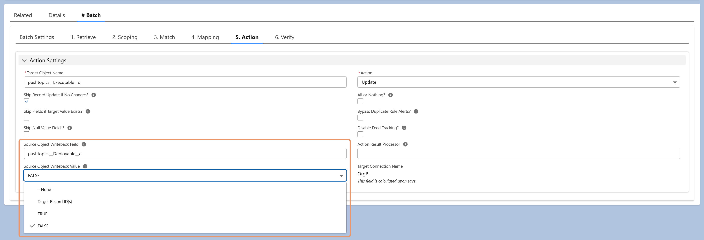

Writeback updates the source record after its related target records have been successfully actioned. It's useful for tracking processing status, marking completion, and preventing duplicate processing in future runs.
When a Source Writeback Field is configured, DSP supports:
Target Record ID(s): Writes a comma-separated list of successfully processed target record IDs back to the source.
Static Value (TRUE or FALSE): Writes either TRUE or FALSE to the specified source field.
